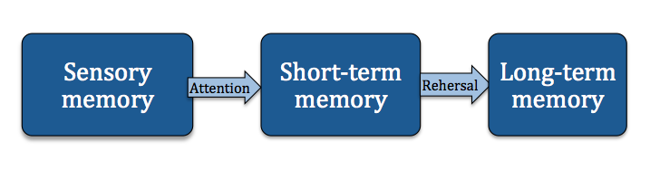
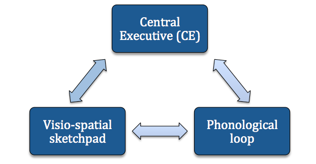

Models of Cognition
Models of cognition refer to theories about how our memory works. Two of such models are the
Multi-store model (MSL) and the Working memory model (WMM). These models explain two
different way in which memory formation and retrieval could be explained, although it is
important to know that whilst both of these models have evidence to support them, neither
of them can be scientifically proven.
The IB requires psychology students to know TWO Models of cognition.
The Multi-store model (MSM)
The main idea of the MSM is that our memory is separated into storage spaces based on 3 main criteria: the duration, capacity and the encoding of the memory. This model shows represents the working of our memory as one like a computer, with our cognitive processes happening one after another, as a sequence of processes.
The MSM:
RESEARCH:
Glanzer and Cunitz, 1966 - The aim of this study was to test the serial positioning effect,
which is part of this memory storage model. This effect suggests that people can remember
things more easily if they are seen at the beginning of a list ( which is called the primacy effect),
or if it is the thing that was told them last ( also known as recency effect).
For this they did a laboratory experiment, where they took two groups of people,
to whom they gave the same lists of words. However, whilst the first group was given the task of
recalling the list right after they read it, the second group was given a distractive task, which lasted 30 second.
They found that whilst the participants of the first group experienced the effects of both
primacy and recency, in the second group the limited capacity of the STM was taken up by the task
that they had to perform, and they only experienced the primacy effect, which stored the words in their short-term memory.
The Working memory model (WMM)
The working memory model builds on the idea that our memory is stored in one of 3 systems,
based on the way we acquire it. The 3 systems that our memory is separated into
are the Central Executive (CE), the Phonological loop and the Visio-spatial sketchpad.
According to this model, the Phonological loop is further divided into the "inner ear",
which is able to hold speech-based memories, and the "inner voice". This voice inside our head
is used when, for example, we are reading a book and listening to the "voice of the narrator" inside our mind.
The Visio-spatial sketchpad, on the other hand, helps us remember picture and colour based memories.
So, this is used when we see pictures, photos, or read a text that has been highlighted / written with different colours.
Lastly, the Central Executive (CE) is responsible for connecting these different types of memories,
and controlling and coordinating the other two systems.
The WMM:
RESEARCH:
Robbins et al, 1996 - The aim of his study was to test this model based on participants’
ability to visualize and memorize the positions of chess pieces on a chess board.
To test this memory storage model, there were 3 groups of participants,
who were each given a different type of task whist having to replicate the positions on the board:
one group was given a verbal disruptive task, where they had to repeat the word “the” over and over again,
the second group was given a visual task of having to press buttons with numbers on them,
using their non-preferred hand, and lastly the third group was given a task that was aimed at blocking their CE,
during which task they had to say random letter out loud to a beat. There was of course a fourth, control group.
This experiment showed that for this visual memory task, the verbal disruptive task caused
no disturbance, whereas both the visual and the CE disrupting tasks radically
decreased the accuracy of the memory, because, as predicted by this model,
both the visual and the CE part of our memory were needed for this type of a memory to stay strong.